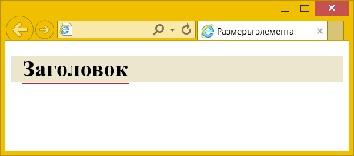
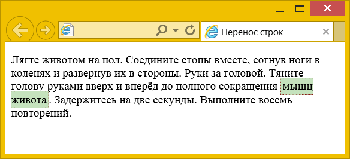
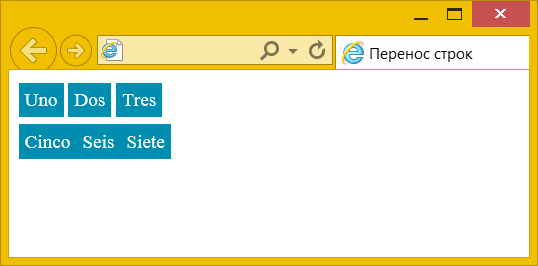
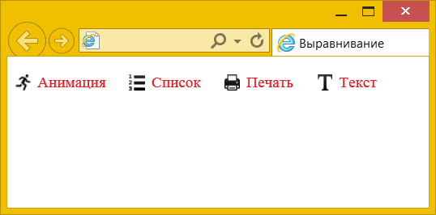
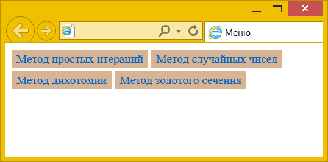

Строчными называются такие элементы, которые являются непосредственной частью строки, у них значение свойства display установлено как inline. Элементы, для которых это значение задано по умолчанию, — <span>, <a>, <q>, <code> и др., в основном они используются для изменения вида текста или его смыслового выделения.
Особенности строчных элементов
Перечислим характерные особенности строчных элементов.
Свойства, связанные с размерами (width, height), не применимы.
Размеры строчных элементов определяются их содержимым и не могут напрямую меняться с помощью свойств width и height, которые, соответственно, задают ширину и высоту элемента. Добавление этих свойств к строчным элементам просто игнорируется.
Размер элемента равен его содержимому плюс значения margin, border и padding.
Несмотря на то, что явно задать размеры элемента нельзя, на него можно влиять косвенно с помощью свойств margin, border и padding, значения которых суммируются с размерами содержимого (пример 1).
Пример 1. Размеры элемента
<!DOCTYPE html>
<html>
<head>
<meta charset="utf-8">
<title>Размеры элемента</title>
<style>
h1 {
background: #EDE6CE; /* Цвет фона */
}
h1 span {
margin: 16px; /* Отступы */
padding: 1px; /* Поля */
border-bottom: 2px solid #D71920; /* Линия снизу */
}
</style>
</head>
<body>
<h1><span>Заголовок</span></h1>
</body>
</html>В данном примере внутрь блочного элемента <h1> добавлен строчный элемент <span> и для него уже заданы свойства margin, padding и border. Это сделано для того, чтобы линия была строго под текстом (рис. 1), а не на всю длину блока, как получилось бы, добавь мы border для h1 напрямую.

Рис. 1. Линия под текстом
Заметьте одну особенность — для строчных элементов margin работает только по горизонтали, но никак не вертикали. Таким образом, свойства margin-top и margin-bottom не действуют.
Срочные элементы переносятся на другую строку при необходимости.
Раз мы имеем дело со строками, то текст, естественно, переносится, чтобы строка целиком поместилась по ширине. Перенос текста, как правило, происходит в месте пробела и может разделить наш строчный элемент на две части и более. Это не страшно, пока к элементу не применяется стилевое оформление. На рис. 2 показано, как фон и рамка разбивается на две части.

Рис. 2. Перенос строки
Чтобы запретить перенос текста внутри элемента, добавьте свойство white-space со значением nowrap (пример 2).
Пример 2. Перенос строк
<!DOCTYPE html>
<html>
<head>
<meta charset="utf-8">
<title>Перенос строк</title>
<style>
.muscle {
padding: 2px; /* Поля вокруг текста */
border: 1px dotted maroon; /* Параметры рамки */
background: #C5E2BD; /* Цвет фона */
white-space: nowrap; /* Запрещаем перенос текста */
}
</style>
</head>
<body>
<p>Лягте животом на пол. Соедините стопы вместе, согнув ноги в коленях
и развернув их в стороны. Руки за головой. Тяните голову руками
вверх и вперёд до полного сокращения <span class="muscle">мышц живота</span>.
Задержитесь на две секунды. Выполните восемь повторений.</p>
</body>
</html>Перенос текста считается за пробел.
В коде HTML любой перенос текста воспринимается браузером как пробел, это касается и размещения элементов на отдельных строках. Сравните два абзаца в примере 3. В первом абзаце каждый <span> располагается на отдельной строке, а во втором абзаце код идёт сплошной строкой без пробелов и переносов.
Пример 3. Перенос но новую строку
<!DOCTYPE html>
<html>
<head>
<meta charset="utf-8">
<title>Перенос строк</title>
<style>
span {
padding: 5px; /* Поля вокруг текста */
background: #008EB0; /* Цвет фона */
color: #fff; /* Цвет текста */
}
</style>
</head>
<body>
<p>
<span>Uno</span>
<span>Dos</span>
<span>Tres</span>
</p>
<p><span>Cinco</span><span>Seis</span><span>Siete</span></p>
</body>
</html>Результат данного примера показан на рис. 3. В первой строке между цветных прямоугольников появилось небольшое пространство, а вторая строка выглядит сплошной.

Рис. 3. Пробелы между элементами
В строчно-блочных элементах мы ещё вернёмся к этой особенности.
Можно выравнивать по вертикали с помощью свойства vertical-align.
Свойство vertical-align выравнивает элементы относительно друг друга по вертикали, что позволяет делать верхний и нижний индексы, задавать выравнивание содержимого ячеек таблицы, задавать положение блоков и др. В примере 4 показано выравнивание картинок и текста по середине друг друга.
Пример 4. Использование vertical-align
<!DOCTYPE html>
<html>
<head>
<meta charset="utf-8">
<title>Выравнивание</title>
<style>
img {
vertical-align: middle; /* Выравнивание по середине */
}
.icon {
vertical-align: middle; /* Выравнивание по середине */
margin-left: 7px; /* Отступ слева */
margin-right: 20px; /* Отступ справа */
color: #ED1C24; /* Цвет текста */
}
</style>
</head>
<body>
<p>
<img src="image/animate.png" alt=""><span class="icon">Анимация</span>
<img src="image/list.png" alt=""><span class="icon">Список</span>
<img src="image/print.png" alt=""><span class="icon">Печать</span>
<img src="image/text.png" alt=""><span class="icon">Текст</span>
</p>
</body>
</html>Результат данного примера показан на рис. 4.

Рис. 4. Выравнивание картинок и текста
Преобразование в строчный элемент
Строчные элементы можно превращать в блочные с помощью свойства display и его значения block. Также возможно и обратное действие через значение inline и преобразование блочного элемента в строчный (пример 5).
Пример 5. Меню
<!DOCTYPE html>
<html>
<head>
<meta charset="utf-8">
<title>Меню</title>
<style>
.menu {
margin: 0; padding: 0; /* Убираем пустое пространство */
line-height: 1.8; /* Межстрочный интервал */
}
.menu li {
display: inline; /* Строчные элементы */
background: #D9B492; /* Цвет фона */
padding: 3px 7px; /* Поля вокруг текста */
white-space: nowrap; /* Запрещаем перенос текста */
}
.menu li a {
text-decoration: none; /* Убираем подчёркивание у ссылок */
}
</style>
</head>
<body>
<ul class="menu">
<li><a href="1.html">Метод простых итераций</a></li>
<li><a href="2.html">Метод случайных чисел</a></li>
<li><a href="3.html">Метод дихотомии</a></li>
<li><a href="4.html">Метод золотого сечения</a></li>
</ul>
</body>
</html>Результат данного примера показан на рис. 5.

Рис. 5. Строчные элементы
Внимание! Превращение элемента в строчный не даёт право нарушать структуру кода HTML и порядок вложения элементов.
Надо понимать, что HTML и CSS проверяются независимо друг от друга и какие бы вы манипуляции не производили с элементами через стили, на HTML это не оказывает влияние. Код HTML в любом случае должен быть корректным с точки зрения синтаксиса HTML.
См. также
- border
- display
- display в CSS
- height
- margin
- margin в CSS
- padding
- vertical-align
- width
- Абсолютное позиционирование
- Блочные элементы
- Верхний и нижний индекс
- Выравнивание картинок
- Высота и ширина в CSS
- Добавление треугольника
- Использование в вёрстке
- Колесо для сокращённых свойств
- Описание float
- Отзывчивый веб-дизайн
- Открываем блочную модель
- Повёрнутые рамки
- Поток
- Примеры использования float
- Рамка вокруг изображений
- Свойства текста в CSS
- Свойство border
- Спойлер
- Строчно-блочные элементы